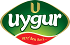
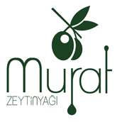
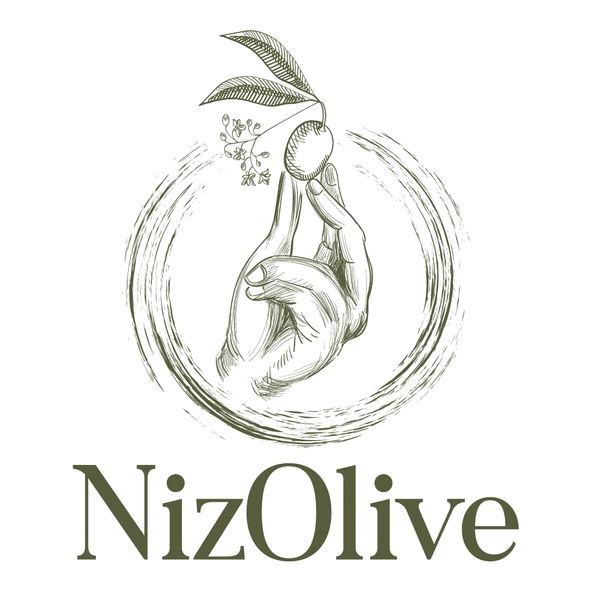

Nizip Yağlık
Nizip Yağlık, Güneydoğu Anadolu’da öne çıkan, güçlü gövdeli ve belirgin tat profili sunan bir zeytin çeşididir.
Nizip Yağlık odaklı zeytinyağı markaları, benzer bölgeler ve ilgili zeytin çeşitleri. 7 marka listesi.
Bu Sayfadaki Markalar

Market Öne ÇıkanUygur Zeytinyağı
1972'den beri Gaziantep'te faaliyet gösteren üretici. Nizip tesislerinde natürel sızma zeytinyağı ve zeytinyağlı sabun üretir....
Kürşat
Güneydoğu bölgesinden, özellikle Kilis ve Hatay zeytinlerinden üretim yapan marka. Halhalı ve Nizip zeytinlerinden kaliteli yağ üretir....
MASMANA
Kilis kökenli dördüncü nesil aile üreticisi. Organik ve natürel sızma odaklı, erken hasat ve özel seri yağlarıyla öne çıkar....

Premium / ButikMurat Zeytinyağı
Murat Zeytinyağları...

Bölgesel / YerelNizolive
Güneydoğu kökenli üretici marka. Nizip yağlık başta olmak üzere bölgesel zeytinlerden zeytinyağı üretimi yapar....
Yalım Zeytin Yağları
Gaziantep merkezli köklü üretici. Günlük mutfak kullanımına ve natürel sızma serilerine yönelik geniş bir ürün gamı sunar....
Zeytincir
Gaziantep odaklı natürel sızma üretici marka. Saf zeytinyağı ve filtreli-filtresiz ürün diliyle öne çıkar....